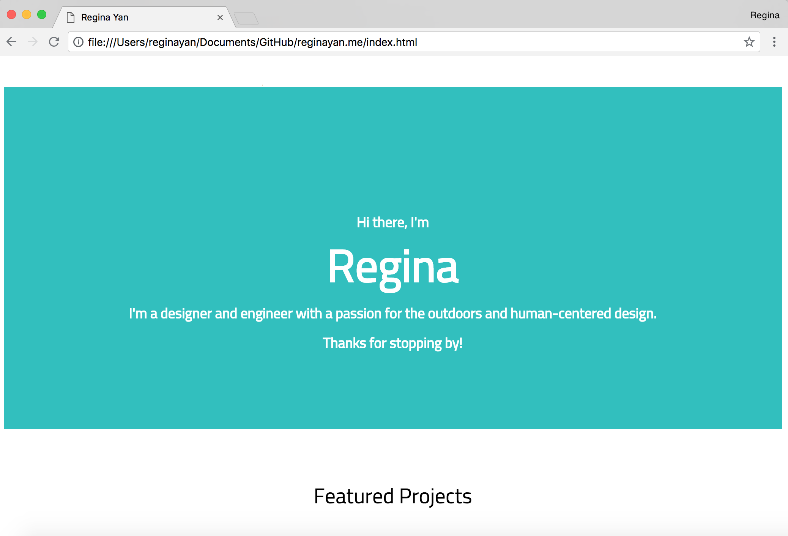
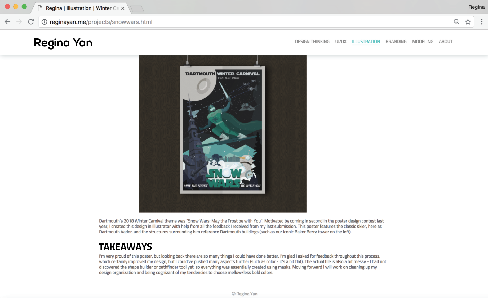
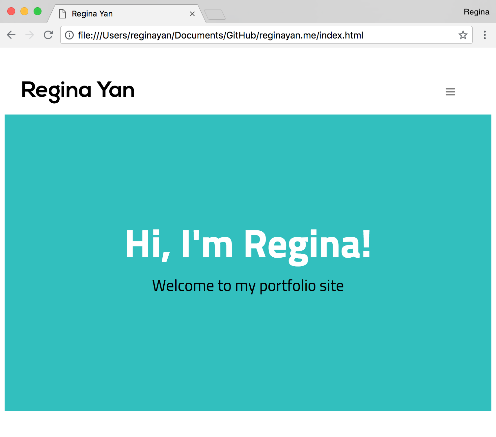
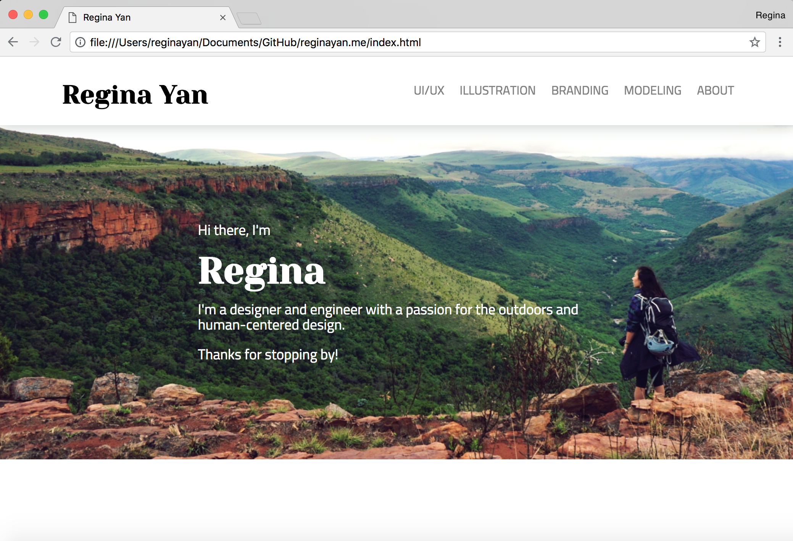
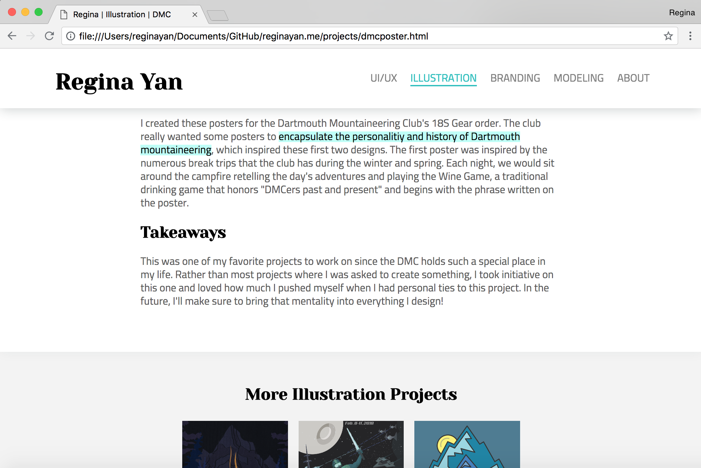

Personal Website

This is quite meta and by no means a sly "humble-brag/undercover self-call" on my part. I thought I'd just document a bit of my process of creating this site since I figured it's about time I learn HTML/CSS/Javascript. I've found that, as a UI/UX designer working with front-end developers, it's so important to understand the engineering side so that I can 1. be more mindful of their process when I'm creating designs and 2. better communicate my ideas to them.
So, I watched a few youtube videos and played around with some online tutorials to create this site over my junior summer. I wrote basic HTML/CSS and included a bit of Javascript for the Design Thinking page. Once I had a general template, I wrote out documentation and description for the projects I’ve designed. The hardest part honestly was getting myself to stop - I would start coding/writing after dinner and suddenly realize that it's 3AM!
Version 1: Basic Site
In this bare-bones version, I learned the basics of HTML/CSS and navigating GitHub
Version 2: Adding Projects
In the second iteration, I added all my project images/documentation and worked more on styling the text.
Version 3: Responsiveness
I then focused on responsiveness by learning how to use media queries and implemented some Javascript in the nav bar (turning the project sections into a hamburger menu)
Version 4: Styling the site
With helpful input from friends, I added a hero image and changed up the fonts to make the site more interesting and the project descriptions more readable (different font for section headers vs. text paragraphs)
Version 5: Enhancing User Flow
I received a lot of helpful feedback, one of which was the fact it's hard to navigate from one project to another without always going back to the main section page. I then incorporated a "More Projects" section at the bottom of each project to enhance the user flow and get rid of the "now what do I do" feeling.
Takeaways
I am starting to delve deeper into the UI/UX field, and I'm so excited to explore even more. I've spoken with a few web engineers during my internship at Cogo Labs to ask for feedback and advice on moving forward. I will be learning React next and working more closely with developers… we'll see what happens!